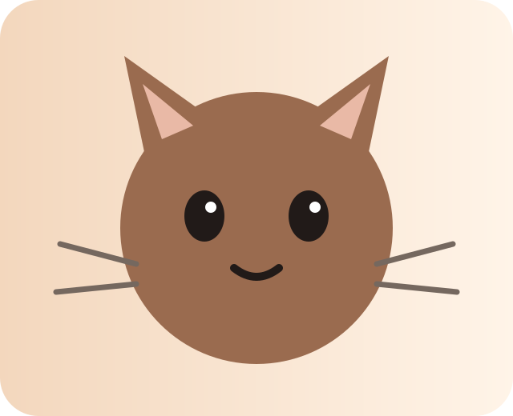

Cat behaviour and welfare education.
Open source ↗V1.6 · resident-aware café lab
Coffee.
Cats.
Choice.
A tiny digital café where humans order coffee, cats keep the house rules, and the room changes depending on who lives in it.
🐾 8 residents · 🏠 4 rooms · 🧠 resident-specific simulation · 📡 source-aware data
cat-led design
not cat-themed decoration
not cat-themed decoration
the cat gets veto power.

🐾🐾🐈
8fictional residents
🏠
4interactive rooms
🧠
resident-awarepreference model
📊
demo pulsesimulation telemetry
☕
0real reservations
01 / the residents
Eight tiny
characters.
Every resident has a different preference model. Their profiles are fictional and designed for the simulation: the point is not to “score a cat”, but to explore how environment, choice and individual differences interact.
02 / cat-led room lab
Design for
this cat.
Pick a resident, pick a room, then click or drag the objects around. The cat reacts to the environment. The model is intentionally fictional and educational.
SUNROOM · CAT-LED DESIGN
sunlit window
Click an object to see the resident react · drag objects to reposition them
03 / welfare lab
Read the
whole room.
The five-pillar model keeps the simulation from turning into a single “happy cat” meter. Click a pillar to inspect the design idea.
current demo signals
Room wellbeing
Signals are simulated. They are not veterinary assessment or a claim about a real animal.
04 / café simulation
Run the
day.
The café has a simulated clock, resident routines and little incidents. Good decisions protect choice rather than forcing an outcome.
local café clock
--:--
loading resident rhythm…
micro-incident
Loading…
What would you do first?
05 / welfare command center
The café
has a pulse.
A lightweight operational view of the simulation: choice opportunities, retreat access, enrichment freshness and sensory load.
choice opportunities14
retreat coverage92%
enrichment freshness78%
sensory loadlow
06 / resident activity
Little things
happened.
A fictional activity feed makes the café feel alive without pretending these are real-time observations of real cats.
07 / evidence shelf
Pretty, but
grounded.
Educational framing and external sources are kept separate from fictional resident telemetry. Always verify real-world information at its source.
Veterinary education and feline care resources.
Open source ↗General cat-care education and guidance.
Open source ↗